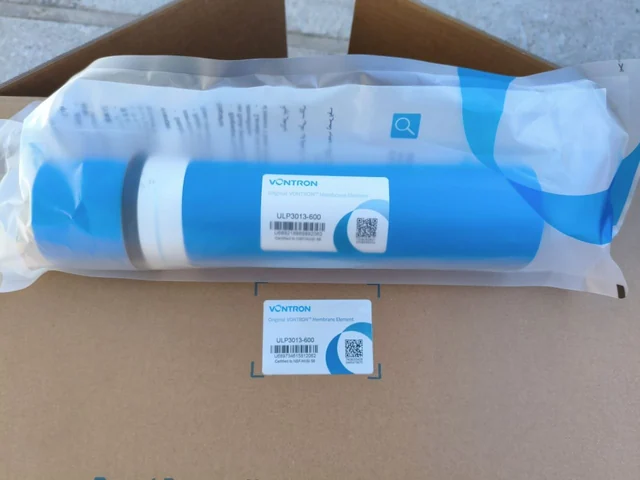

Vontron ULP3013-600 RO Membrane Element
Review the documented model, published test conditions, dimensions and compatibility checks.
View ULP3013-600 details
400GPD High-Flow Reverse Osmosis (RO) Membrane Element should be selected by membrane capacity, feed-water pressure, filter-stage layout, installation position and service access. For distributor or appliance-brand programs, confirm the faucet, tank or tankless layout, replacement filters and private-label packaging before quotation. Key specifications include Capacity: 400 GPD.
Buyers comparing 400GPD High-Flow Reverse Osmosis (RO) Membrane Element should look beyond the model name and check membrane output, filter-stage sequence, inlet-pressure range, service access and installation format. For OEM RO water purifier programs, the quotation should also define panel language, faucet or tank options, replacement filters, logo placement and export carton requirements.
For 400GPD High-Flow Reverse Osmosis (RO) Membrane Element, use this model when the buyer needs a defined purifier configuration with practical installation details, replacement filter planning and export carton control. The page should answer how the unit fits into a kitchen, office or commercial drinking-water program before repeating broad RO or OEM claims.
| Capacity | 400 GPD |
|---|---|
| Type | Dry Membrane |
Do not treat a 400GPD residential or light-commercial element as an industrial wastewater selection. Review PURO-ULD evidence boundaries and send the actual process-fluid report first.
Send quantity, target market, configuration notes and packaging requirements for 400GPD High-Flow Reverse Osmosis (RO) Membrane Element. Yuchen Water will confirm matching options, accessories and export details before pricing.